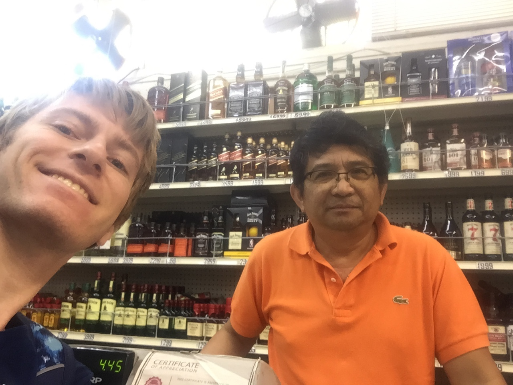

Seven Palms Food Center
Journey into the familiar: Part 2
Just like farmers markets, grocery stores sell much more than food items, mostly going into things like medical drugs and menstrual products. As expected, the lighting and ambiance of your typical grocery store like this one can be expressed as artificial, industrial, and much more commercial than an outside farmers market. However, I find this setup still strangely comforting.
To be honest, I may just find it relaxing because it’s what I’m familiar with. I shopped at grocery stores so much I grew accustomed to the shelves upon shelves of products.
Trying to get customers to stop and answer questions about their experience shopping at this grocery store was a hassle due to the nature of the store as I’d described earlier. Since customers are usually in-and-out, they usually don’t have the patience to answer questions, especially from a college student. One customer expressed that they’re in a hurry, and I managed to get out from another that the experience is nothing out of the ordinary and they’re just here to buy milk.
All of that said, I had a pleasant and enlightening conversation with the cashier and owner of the store, 62 year-old Ronaldo. Ronaldo often interacts with customers with a simple “have a good day!” - much less than a farmers market vendor. Everyone comes and goes, and they all seem stressed, he says, especially during midterms and finals. However, he does have regular customers that he recognizes even if he doesn’t know them personally. Some of these people, some students, buy too much liquor - even though he knows he will lose out on profit, he makes an effort to cut alcoholics off when they’ve had too much.
He strives to treat his customers like his own children, he said. Even those who use CalFresh/EBT cards, which are accepted at this particular grocery store.